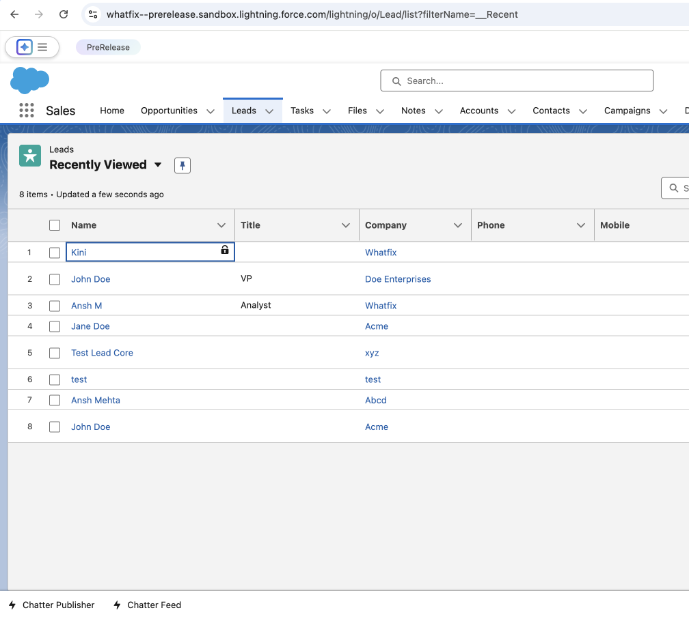

Flow 1 · Overflow menu
Flow 2 · Completion rules tab
Flow 2 · alternate approach
Completion rules as a tab in the editing panel
Back
Next
M
Mirror
shashi_locale
Workflows
Analytics
Settings
M
Mohini Kini
Notifications
Resources
Chat
QuickRead: your AI-generated summarized responses are now available for everyone!
Workflows
Create simulation
Name
Type
{{ row.name }}
Workflow
M
M
Mirror
Start mirroring
{{ wf.name }}
Test Capture sync
Add more screens
Default language
Screen 5
Untitled

Edit
Screen 4
Untitled
Cancel
Preview
M
T
Editing screen
Edits
Completion rules
Edit screen
Link screens
No links added yet
Add link
Mirror users can take these actions to move to the next screen. Optionally, require mandatory fields to be completed before either one counts.
Fields
{{ f.name }}
Pick at least one action, or this screen can never be completed.
Cancel
Apply changes
{{ step }}
{{ captionTitle }}
{{ captionBody }}